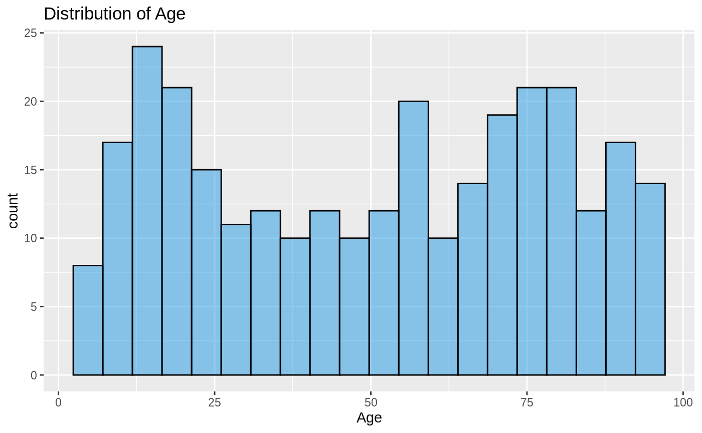
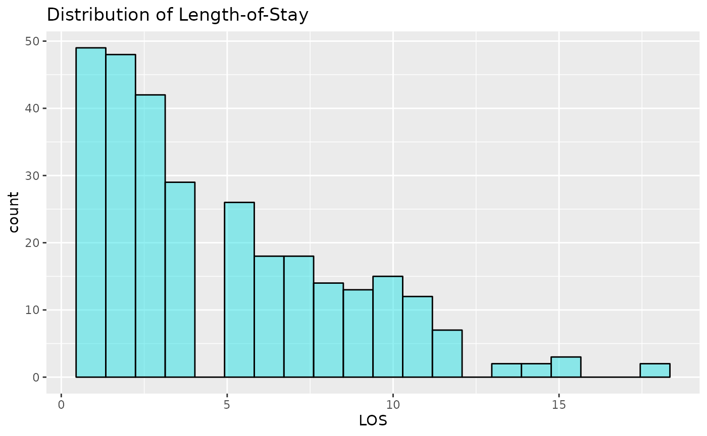

vignettes/LOS_model.Rmd
LOS_model.RmdThis vignette details why the LOS_model dataset was created, how to load it, and gives examples of use for learning/teaching regression modelling using Generalized Linear Models (GLMs), and related techniques.
The data were created specifically for regression tutorials, simulating a small set of data on hospital in-patient spells. The data are 10 sets of 30 simulated patient records, representing 10 different hospitals (“Trusts”). The dataset contains:
library(NHSRdatasets)
library(dplyr)
library(ggplot2)
data("LOS_model")
head(LOS_model)
#> ID Organisation Age LOS Death
#> 1 1 Trust1 55 2 0
#> 2 2 Trust2 27 1 0
#> 3 3 Trust3 93 12 0
#> 4 4 Trust4 45 3 1
#> 5 5 Trust5 70 11 0
#> 6 6 Trust6 60 7 0
summary(LOS_model)
#> ID Organisation Age LOS
#> Min. : 1.00 Trust1 : 30 Min. : 5.00 Min. : 1.000
#> 1st Qu.: 75.75 Trust2 : 30 1st Qu.:24.00 1st Qu.: 2.000
#> Median :150.50 Trust3 : 30 Median :54.00 Median : 4.000
#> Mean :150.50 Trust4 : 30 Mean :50.66 Mean : 4.937
#> 3rd Qu.:225.25 Trust5 : 30 3rd Qu.:75.25 3rd Qu.: 7.000
#> Max. :300.00 Trust6 : 30 Max. :95.00 Max. :18.000
#> (Other):120
#> Death
#> Min. :0.0000
#> 1st Qu.:0.0000
#> Median :0.0000
#> Mean :0.1767
#> 3rd Qu.:0.0000
#> Max. :1.0000
#>
# 82.3% survived
prop.table(table(LOS_model$Death))
#>
#> 0 1
#> 0.8233333 0.1766667Now lets look at the distributions of Age and LOS. We might expect Age to be normally distributed, but this would be unrealistic, as elderly patient represent higher proportions of the total in-patients. It could be uniform, it could be bi-modal (or have more peaks), but nothing is particularly clear. LOS is highly right-skewed. This means that the high values will affect the mean, dragging it out, and the median would be a better estimation of the centre of the distribution. This shows that most patients don’t stay very long, but a few patients stay notably longer.
ggplot(LOS_model, aes(x=Age)) +
geom_histogram(alpha=0.5, col=1, fill=12, bins=20)+
ggtitle("Distribution of Age")
ggplot(LOS_model, aes(x=LOS)) +
geom_histogram(alpha=0.5, col=1, fill=13, bins=20)+
ggtitle("Distribution of Length-of-Stay")
We will attempt to model LOS, using Age and Death, and also to model Death using LOS and Age. This vignette does not describe linear models per se, but assumes you are familiar with linear regression. If not, pause here and do a little reading before you continue.
Our data are not continuous, linear, or normally distributed. Death is binary, LOS is a count. We can extend the linear model idea for this as a Generalized Linear Model (GLM)[1] , by fitting our model via a ‘link function.’ This function transforms data and allows our response, and it’s variance, to relate to a linear model through the link function:
\[\large{g(\mu)= \alpha + \beta x}\] Where \(\mu\) is the expectation of Y, and \(g\) is the link function
The Ordinary Least Squares (OLS) fitting technique used in linear regression, is not a good fit here as our data are not necessarily distributed like that. Here we can use ‘maximum-likelihood estimation’ (MLE). MLE is related to probability and can be used to identify the parameters that were most likely to have produced our data (the largest likelihood value, or ‘maximum likelihood’).
MLE is an iterative process, and is actually performed on the log-likelihood. The model is iteratively refitted to maximise the log-likelihood. Our model is said to ‘converge’ when we can’t improve it any more (usually changes in the log-likelihood < 1e-8). If you get convergence-related error messages, it means the modelling function can’t settle on, or reach the MLE. This often means your parameterisation is mismatched, or there correlations in your data.
Although many of the methods for lm are common to glm, inspecting plots of residuals is trickier. We also can’t use R2 either, as the assumptions refect OLS. Various methods other methods exist, depend on what you want to compare, including:
glms can be compared using likelihood ratio tests, that compare the log-likelihoods between two models. We test a reduced model against the larger model, with the null hypothesis that the two likelihoods are not significantly different. If our test is positive (usually p<0.05, but beware of p-values…), our models are signficantly different, with the one with higher log-likelihood the better model.Let’s fit a generalized linear model, firstly for Death, and secondly for LOS.
Death is a binary variable recorded in our LOS_model dataset. This cannot be linear and is usually modelled using the binomial family argument, and the logit link function. This link function is the default in R for binomial regressions, and is commonly referred to as Logistic Regression. We’ll fit this using the glm function. Rather than fitting Death as such, the link function makes this the log-odds of death.
glm_binomial <- glm(Death ~ Age + LOS, data=LOS_model, family="binomial")
summary(glm_binomial)
#>
#> Call:
#> glm(formula = Death ~ Age + LOS, family = "binomial", data = LOS_model)
#>
#> Deviance Residuals:
#> Min 1Q Median 3Q Max
#> -1.1007 -0.6407 -0.5118 -0.4499 2.1803
#>
#> Coefficients:
#> Estimate Std. Error z value Pr(>|z|)
#> (Intercept) -2.435539 0.370818 -6.568 5.1e-11 ***
#> Age 0.003602 0.006372 0.565 0.5719
#> LOS 0.127344 0.044359 2.871 0.0041 **
#> ---
#> Signif. codes: 0 '***' 0.001 '**' 0.01 '*' 0.05 '.' 0.1 ' ' 1
#>
#> (Dispersion parameter for binomial family taken to be 1)
#>
#> Null deviance: 279.78 on 299 degrees of freedom
#> Residual deviance: 267.06 on 297 degrees of freedom
#> AIC: 273.06
#>
#> Number of Fisher Scoring iterations: 4
ModelMetrics::auc(glm_binomial)
#> [1] 0.6594225Using the summary function, we can see our model output, including:
*, to indicate the significance levels.ModelMetrics package to calculate the auc. This is suggests that ~66% of the variation in our data can be explained by our model.If we consider the logic of the model above, it is telling us that LOS is a significant predictor for the log-odds of death, but that age is not. This seems unlikely, unless Age and LOS are not independent. If this is the case, e.g. elderly patients stay longer or that shorter staying elderly patients are more likely to have died, the effects of LOS may be obscuring the effects of Age. This is referred to as confounding. We can examine this using an interaction term.
‘Interactions’ are where predictor variables affect each other. For example, the Hospital Standardised Mortality Ratio (HSMR) [4] uses an interaction term between co-morbidity and age. So co-morbidities score may have different effects related to age, as well as the independent effects of age and co-morbidity score.
We can add these to our models with * to include the interaction and the independent terms, or : if you just want the interaction without the independent terms:
glm_binomial2<- glm(Death ~ Age + LOS + Age*LOS, data=LOS_model, family="binomial")
summary(glm_binomial2)
#>
#> Call:
#> glm(formula = Death ~ Age + LOS + Age * LOS, family = "binomial",
#> data = LOS_model)
#>
#> Deviance Residuals:
#> Min 1Q Median 3Q Max
#> -1.0115 -0.7134 -0.5092 -0.2699 2.7244
#>
#> Coefficients:
#> Estimate Std. Error z value Pr(>|z|)
#> (Intercept) -4.516296 0.747036 -6.046 1.49e-09 ***
#> Age 0.042619 0.011875 3.589 0.000332 ***
#> LOS 0.544862 0.135868 4.010 6.07e-05 ***
#> Age:LOS -0.006988 0.001918 -3.643 0.000269 ***
#> ---
#> Signif. codes: 0 '***' 0.001 '**' 0.01 '*' 0.05 '.' 0.1 ' ' 1
#>
#> (Dispersion parameter for binomial family taken to be 1)
#>
#> Null deviance: 279.78 on 299 degrees of freedom
#> Residual deviance: 247.94 on 296 degrees of freedom
#> AIC: 255.94
#>
#> Number of Fisher Scoring iterations: 5
ModelMetrics::auc(glm_binomial2)
#> [1] 0.7068597Now our model is suggesting that Age, LOS and their interaction are significant. This suggests that, as well as their own effects, their combination is important, and their effects confound each other.
Now we have built a model, we can use it to predict our expected \(y\), the probability of death per patient in this case. We can supply a new dataset to fit it to, using newdata, or omitting this fits our model to the original dataset. Using a glm, we have built a model via a link function, so we need to decide what scale to make our predictions on: the link scale (the log-odds of death in this case) or the response (the probability of death in this case).
LOS_model$preds <- predict(glm_binomial2, type="response")
head(LOS_model,5)
#> ID Organisation Age LOS Death preds
#> 1 1 Trust1 55 2 0 0.13572744
#> 2 2 Trust2 27 1 0 0.04700276
#> 3 3 Trust3 93 12 0 0.14023994
#> 4 4 Trust4 45 3 1 0.12928742
#> 5 5 Trust5 70 11 0 0.28486502We have added our predictions back into the original data.frame using the column name preds, and patient ID 1 has a risk of death of 0.136 or 13.6% probability of death. These predictions can be used in many different applications, but common uses of them are identifying the highest risk patients for clinical audit, comparing ratios of the observed deaths and expected deaths (sum of the probability), or risk-adjusted control chart monitoring.
LOS, the time a patient is in hospital, is another variable to examine in the dataset. This is a count, and is therefore bounded at zero (can’t have counts < 0), can only take integer values (e.g. 2 or 3, but not 2.5) and is heavily right-skewed, as most patient are only admitted for one or two days, but rarely patients are in for much longer. We’ll apply a similar modelling approach to the last example, but the family argument and link function must be different. We will use the Poisson distribution and the natural logarithm link function, the standard choices for count data[5].
glm_poisson <- glm(LOS ~ Age * Death, data=LOS_model, family="poisson" )
summary(glm_poisson)
#>
#> Call:
#> glm(formula = LOS ~ Age * Death, family = "poisson", data = LOS_model)
#>
#> Deviance Residuals:
#> Min 1Q Median 3Q Max
#> -3.4929 -0.9039 -0.1069 0.7589 3.3681
#>
#> Coefficients:
#> Estimate Std. Error z value Pr(>|z|)
#> (Intercept) 0.514456 0.078345 6.567 5.15e-11 ***
#> Age 0.018097 0.001169 15.479 < 2e-16 ***
#> Death 1.491162 0.140864 10.586 < 2e-16 ***
#> Age:Death -0.020209 0.002187 -9.240 < 2e-16 ***
#> ---
#> Signif. codes: 0 '***' 0.001 '**' 0.01 '*' 0.05 '.' 0.1 ' ' 1
#>
#> (Dispersion parameter for poisson family taken to be 1)
#>
#> Null deviance: 752.23 on 299 degrees of freedom
#> Residual deviance: 459.77 on 296 degrees of freedom
#> AIC: 1429
#>
#> Number of Fisher Scoring iterations: 5We can’t use the AUC value here, as that is related to categories. We can only make comparisons between models or in terms of prediction error. Lets fit the same model without the interaction and see if it is different using the AIC or the likelihood ratio test (that tell you the same thing):
glm_poisson2 <- glm(LOS ~ Age + Death, data=LOS_model, family="poisson" )
AIC(glm_poisson)
#> [1] 1428.967
AIC(glm_poisson2)
#> [1] 1508.352
# anova(glm_poisson2, glm_poisson, test="Chisq") will do the same thing without using the lmtest package
lmtest::lrtest(glm_poisson, glm_poisson2)
#> Likelihood ratio test
#>
#> Model 1: LOS ~ Age * Death
#> Model 2: LOS ~ Age + Death
#> #Df LogLik Df Chisq Pr(>Chisq)
#> 1 4 -710.48
#> 2 3 -751.18 -1 81.385 < 2.2e-16 ***
#> ---
#> Signif. codes: 0 '***' 0.001 '**' 0.01 '*' 0.05 '.' 0.1 ' ' 1Our AIC is lower for the interaction model, and the likelihood ratio test suggest the reduced model is significantly worse.
One of the downfalls of a Poisson models that it’s variance is fixed. This is always proportional to the conditional mean. I will spare you the maths at this point, but what it means is that the variance doesn’t scale to the data. This would be fine if our data were perfectly Poisson distributed, but that is rare in practice. Data commonly display more variance than we would expect, and this is referred to as overdispersion (OD). OD causes us to underestimate the variance in our model, and our assessments of the significance of parameters are too optimistic because our error is too small. It also affects overall assessment of model fit.
We can test for this, by comparing the ratio of the sum of the squared Pearson residuals over the degrees of freedom. If this value is 1, then the variance is as expected (‘equidispersion’), but if it is >1, then we have OD.
Our model is overdispersed, with residual variance around 1.4 times what the Poisson distribution expects.
There are various different ways to deal with this, and this vignette demonstrates three of the following list. Our options include:
unbiased model, so if we only care about our estimates, or predicted values (and not the error, or ‘significance’) we might do this.So lets try some of them out. To fit a quasi-Poisson model, we simply change the family. Note the dispersion parameter matches the calculation above:
quasi<-glm(LOS ~ Age * Death, data=LOS_model, family="quasipoisson" )
summary(quasi)
#>
#> Call:
#> glm(formula = LOS ~ Age * Death, family = "quasipoisson", data = LOS_model)
#>
#> Deviance Residuals:
#> Min 1Q Median 3Q Max
#> -3.4929 -0.9039 -0.1069 0.7589 3.3681
#>
#> Coefficients:
#> Estimate Std. Error t value Pr(>|t|)
#> (Intercept) 0.514456 0.094807 5.426 1.20e-07 ***
#> Age 0.018097 0.001415 12.791 < 2e-16 ***
#> Death 1.491162 0.170463 8.748 < 2e-16 ***
#> Age:Death -0.020209 0.002647 -7.636 3.12e-13 ***
#> ---
#> Signif. codes: 0 '***' 0.001 '**' 0.01 '*' 0.05 '.' 0.1 ' ' 1
#>
#> (Dispersion parameter for quasipoisson family taken to be 1.464411)
#>
#> Null deviance: 752.23 on 299 degrees of freedom
#> Residual deviance: 459.77 on 296 degrees of freedom
#> AIC: NA
#>
#> Number of Fisher Scoring iterations: 5For a negative binomial model, two options are glm.nb from the MASS package, or glmmTMB function from the package of the same name. Note that the function from MASS does not take a family argument. The dispersion factor here is quadratic to the mean, so don’t compare it directly to the scale factor above.
library(MASS)
nb <- glm.nb(LOS ~ Age * Death, data=LOS_model,)
summary(nb)
#>
#> Call:
#> glm.nb(formula = LOS ~ Age * Death, data = LOS_model, init.theta = 8.300914044,
#> link = log)
#>
#> Deviance Residuals:
#> Min 1Q Median 3Q Max
#> -2.7320 -0.7464 -0.0903 0.6332 2.2742
#>
#> Coefficients:
#> Estimate Std. Error z value Pr(>|z|)
#> (Intercept) 0.509047 0.091934 5.537 3.08e-08 ***
#> Age 0.018194 0.001448 12.565 < 2e-16 ***
#> Death 1.494414 0.183974 8.123 4.55e-16 ***
#> Age:Death -0.020269 0.002881 -7.035 2.00e-12 ***
#> ---
#> Signif. codes: 0 '***' 0.001 '**' 0.01 '*' 0.05 '.' 0.1 ' ' 1
#>
#> (Dispersion parameter for Negative Binomial(8.3009) family taken to be 1)
#>
#> Null deviance: 473.82 on 299 degrees of freedom
#> Residual deviance: 285.44 on 296 degrees of freedom
#> AIC: 1388.5
#>
#> Number of Fisher Scoring iterations: 1
#>
#>
#> Theta: 8.30
#> Std. Err.: 1.82
#>
#> 2 x log-likelihood: -1378.487Finally, using the random-intercept model, fitted with glmer from the lme4 package. The extra formula argument specifies the random-intercept, where 1 means the intercept, and the | reads as ‘intercept varying by organisation.’
library(lme4)
#> Loading required package: Matrix
glmm <- glmer(LOS ~ scale(Age) * Death + (1|Organisation), data=LOS_model, family="poisson")
summary(glmm)
#> Generalized linear mixed model fit by maximum likelihood (Laplace
#> Approximation) [glmerMod]
#> Family: poisson ( log )
#> Formula: LOS ~ scale(Age) * Death + (1 | Organisation)
#> Data: LOS_model
#>
#> AIC BIC logLik deviance df.resid
#> 1429.7 1448.2 -709.9 1419.7 295
#>
#> Scaled residuals:
#> Min 1Q Median 3Q Max
#> -2.6962 -0.8040 -0.0905 0.8521 4.2508
#>
#> Random effects:
#> Groups Name Variance Std.Dev.
#> Organisation (Intercept) 0.00396 0.06293
#> Number of obs: 300, groups: Organisation, 10
#>
#> Fixed effects:
#> Estimate Std. Error z value Pr(>|z|)
#> (Intercept) 1.43006 0.03818 37.455 < 2e-16 ***
#> scale(Age) 0.50621 0.03263 15.513 < 2e-16 ***
#> Death 0.46200 0.06391 7.229 4.87e-13 ***
#> scale(Age):Death -0.56021 0.06116 -9.159 < 2e-16 ***
#> ---
#> Signif. codes: 0 '***' 0.001 '**' 0.01 '*' 0.05 '.' 0.1 ' ' 1
#>
#> Correlation of Fixed Effects:
#> (Intr) scl(A) Death
#> scale(Age) -0.348
#> Death -0.433 0.204
#> scl(Ag):Dth 0.183 -0.529 -0.253confint(glmm)
#> Computing profile confidence intervals ...
#> 2.5 % 97.5 %
#> .sig01 0.0000000 0.1511114
#> (Intercept) 1.3494494 1.5079597
#> scale(Age) 0.4426231 0.5705900
#> Death 0.3353796 0.5860630
#> scale(Age):Death -0.6797591 -0.4398526These models are significantly more complicated. Confint can be use to calculate the confidence intervals above by profiling the likelihood (provided you have the MASS package installed). This allow you to assess the significance of the random-effects. Our CI butts up to zero here, and the AIC is slightly worse than the glm. This suggests it is not well-modelled with the normally distributed random-intercept. The NB model appears to perform better.
Predictions from GLMMS also requires more thought. You can predict with (“conditional”) or without (“marginal”) the random effects. Conditional predictions will have the adjustment for their cluster (or whatever random effect you have fitted), but marginal could be considered the model average, subject to the fixed effects, removing the effects of cluster.
The LOS_model dataset is a fabricated patient dataset with Age, Length of Stay and Death status for 300 patients across 10 hospitals (‘Trusts’). It can be used to learn GLM, GLMM and other related modelling techniques, with examples above.
NELDER, J. A. & WEDDERBURN, R. W. M. 1972. Generalized Linear Models. Journal of the Royal Statistical Society. Series A (General), 135, 370-384
AKAIKE, H. 1998. Information Theory and an Extension of the Maximum Likelihood Principle. In: PARZEN, E., TANABE, K. & KITAGAWA, G. (eds.) Selected Papers of Hirotugu Akaike. New York, NY: Springer New York
SHMUELI, G. 2010. To Explain or to Predict? Statist. Sci. , 25, 289-310.
JARMAN, B., GAULT, S., ALVES, B., HIDER, A., DOLAN, S., COOK, A., HURWITZ, B. & IEZZONI, L. I. 1999. Explaining differences in English hospital death rates using routinely collected data. BMJ, 318, 1515-1520
CAMERON, A. C. & TRIVEDI, P. K. 2013. Regression Analysis of Count Data, Cambridge University Press
GOLDSTEIN, H. 2010. Multilevel Statistical Models, John Wiley & Sons Inc.